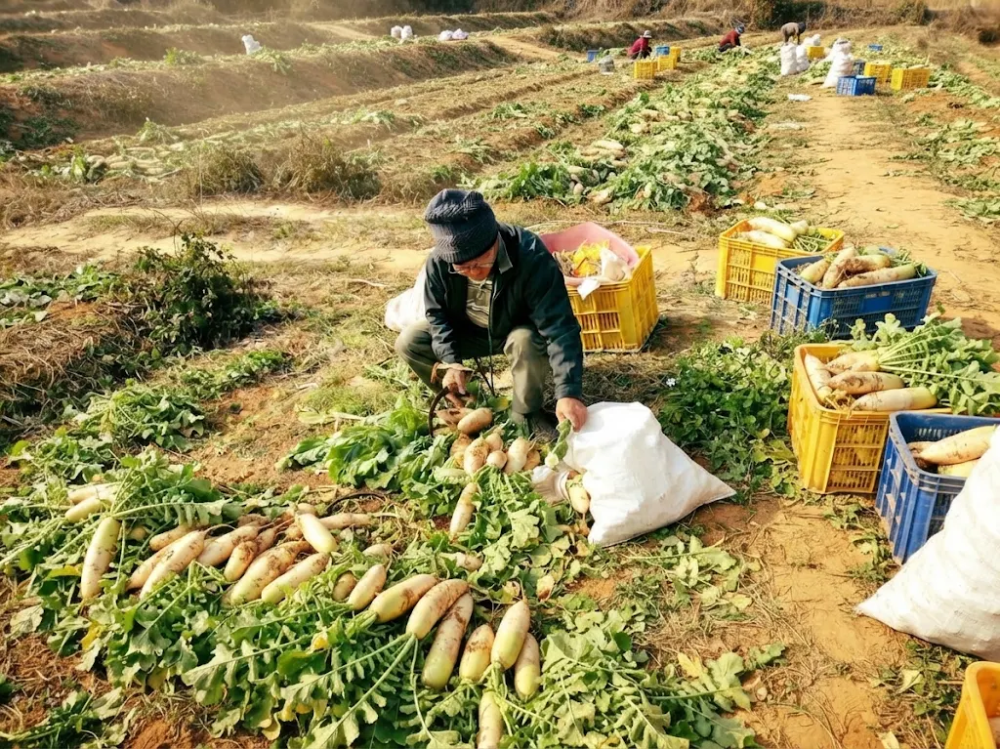
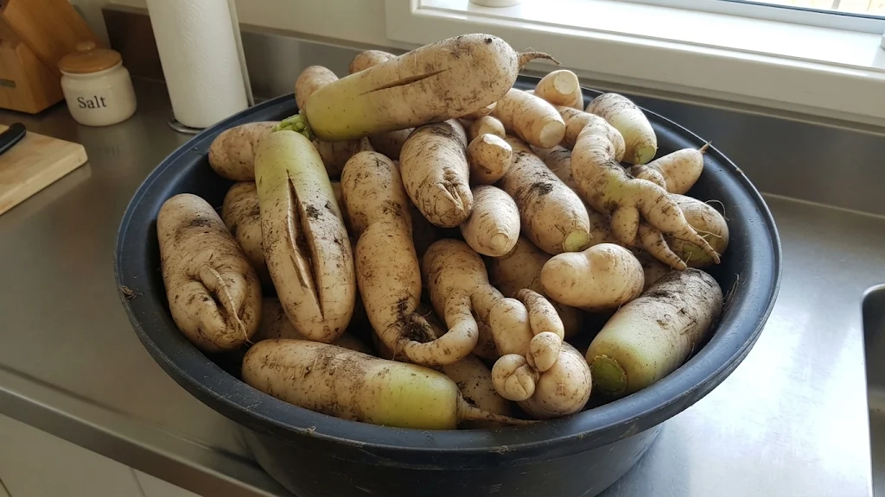
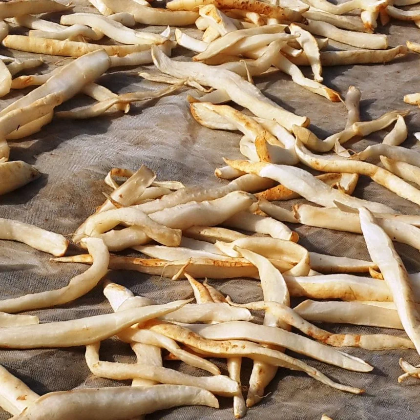

從田裡開始
秋冬蘿蔔，甜如水梨
大肚山清水一帶的紅土排水好。秋冬的白蘿蔔長得慢，甜度更足，纖維也比較紮實。
即使切成條，經過粗鹽揉製和反覆醃曬，切脯仍有家常菜裡熟悉的爽脆口感，咀嚼間盡是甘甜與土地香。

清水手工日曬菜脯
從各種大小的白蘿蔔裡，切出均勻又有口感的一條條。曬好的切脯，有鮮、有香，咬下去超脆。

從田裡開始
大肚山清水一帶的紅土排水好。秋冬的白蘿蔔長得慢，甜度更足，纖維也比較紮實。
即使切成條，經過粗鹽揉製和反覆醃曬，切脯仍有家常菜裡熟悉的爽脆口感，咀嚼間盡是甘甜與土地香。

步驟 01
大大小小的蘿蔔都能用。不管是直挺挺還是長得稍有彎度，只要水分與紮實纖維足夠，都是製做切脯的好材料。
帶傷或不好的地方會在切製前細細剔除，確保每一條切脯都是純粹乾淨的農家滋味。

步驟 02
把蘿蔔切成像薯條的長條。每顆纖維的走向都不一樣，阿婆一條條看著紋路下刀；切錯方向，曬縮後容易薄得像紙。
依循紋理下刀，曬縮後依然保有厚度，咬得到蔬菜純粹的纖維與彈牙咬勁。
步驟 03
用食品用粗鹽均勻撒在蘿蔔上，讓它先出一部分水，也用這一輪的鹽汁搓洗，帶去表面雜質。
這道工序叫「殺青」，第一輪帶有青澀味與表層雜質的汁液會先倒掉，留下潔淨脆嫩的蘿蔔肉身。
步驟 04
再次均勻撒入天然粗海鹽，以雙手適度力道細緻翻揉。
使每條切脯均勻吃鹽、滲出天然甘甜水分，軟化蘿蔔筋絡，為後續入大缸壓醃奠定柔韌口感。
步驟 05
把蘿蔔放入大甕，上面壓大石頭，讓大部分汁液慢慢擠出，纖維也變得更柔韌。
從這道壓醃開始，甕裡的純淨精華汁液會悉數留下，成為後續回缸不可或缺的甘醇基底。
步驟 06
把濕潤的蘿蔔移到日光曬埕，攤開讓清水飽滿的陽光與清風帶走多餘水氣。
隨著陽光穿透蘿蔔肉身，水分蒸散、酵素活化，切脯特有的濃郁日曬香氣才漸漸甦醒飄散。

步驟 07
傍晚太陽下山，及時把曬去表面水氣的蘿蔔壓回甕缸裡，浸入白天保留的天然醃汁。
經過白天的日曬脫水，蘿蔔纖維像海綿般渴求養分，在夜間靜靜把甕底的原汁甜味全數吸回骨子裡。
步驟 08
白天讓日頭蒸散水氣，晚上再回缸吸汁。一進一出之間，原本清淡的醃汁滋味，一回一回濃縮進蘿蔔條深處。
農家依天候、手感含水量與秤重比例，精準判斷是否繼續循環，把歲月與陽光的精華層層鎖住。
步驟 09
切成條後的蘿蔔，比起整條入甕的條仔脯更容易醃透、曬透。
通常數週即可迎來收成，但農家仍嚴格端看當季天氣變化與含水量、失水重量比例，達到外乾內韌的完美平衡才正式封裝。
風味吃法
切脯製作時間較短，收成也較為充裕。它的鮮味和香氣拿來做佐醬、炒菜、煎蛋都合適，切細丁後更可以拌入包子水餃內餡或當作飯糰配料。
下次在餐桌上嚐到這份爽脆，可以想一想阿婆為什麼至今依然堅持用雙手順紋切條。